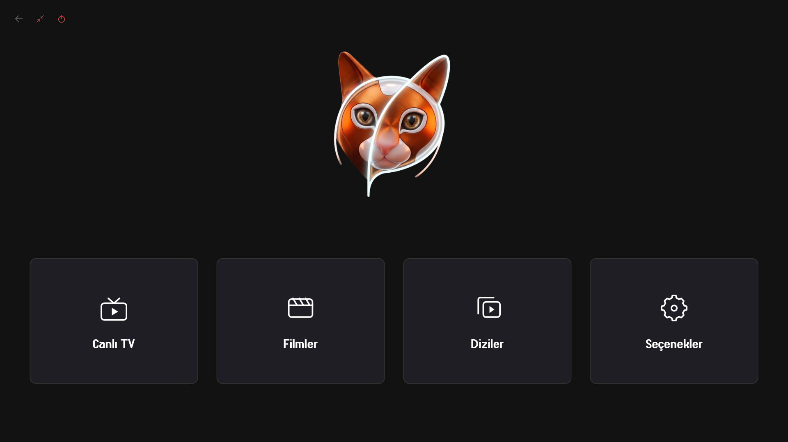
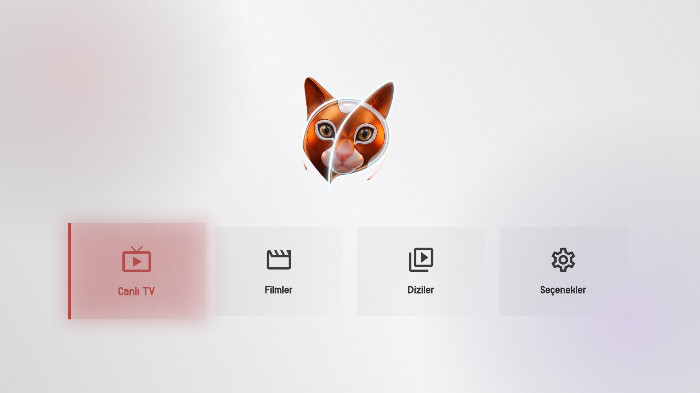
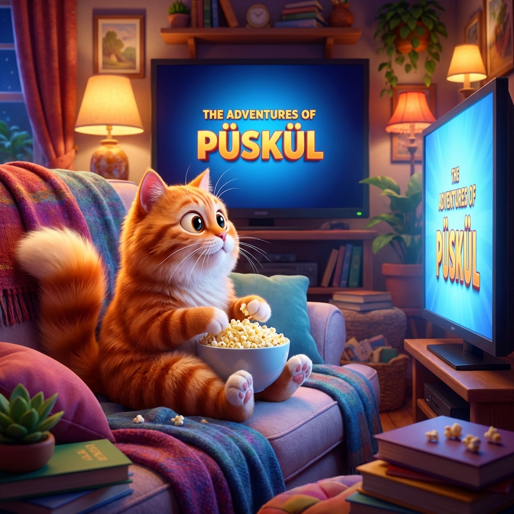

Kelime Avcısı
v1.6Türkçe sözcük hazinesini keşfetmenizi sağlayan etkileşimli kelime oyunu. 1000+ seviye.
İndirSıradan, karmaşık ve hantal IPTV oynatıcılarını unutun! Püsü IPTV; canlı ekran kaydı, anlık ekran görüntüsü, PIP küçük ekranda izleme, sınırsız IPTV hesabı ekleme ve favori sıralama özellikleriyle salonunuzdaki Android TV ekranından bilgisayarınıza ve mobil cihazınıza kadar her platformda ışık hızında bir eğlence dünyası sunar.
Masaüstü ve dizüstü bilgisayarlarınız için baştan sona optimize edildi! .NET 8 ve LibVLCSharp GPU hızlandırmasıyla 4K ve 8K akışlarda sıfır takılma, canlı ekran kaydı, anlık ekran görüntüsü yakalama, PIP küçük ekranda izleme, sınırsız IPTV hesabı ekleme ve favorileri dilediğiniz gibi sıralama desteğiyle eksiksiz masaüstü medya merkezi.

Android TV ve mobil cihazlarda televizyon keyfi: Ekran kaydı, anlık ekran görüntüsü, PIP küçük ekranda izleme, sınırsız IPTV hesabı ekleme ve favori sıralama konforu parmaklarınızın ucunda.

Telefon veya tablet kameranızı doğrultarak Google Play Store üzerinden anında yükleyin.
Google Play'den Yüklecom.pusu.iptv • v18.5
Sıradan IPTV oynatıcılarını unutturan, en son teknolojilerle geliştirilmiş çekirdek yenilikler.
Işık hızında kanal geçişi (<100ms), anlık EPG yayın akışı rehberi, tek tuşla Canlı Yayın Hatırlatıcısı ve kayan küçük ekranda (PIP) kesintisiz izleme.
Hem Windows hem Android'de canlı yayınları doğrudan kaydedin; dahili deklanşör butonuyla videodan anında yüksek çözünürlüklü ekran görüntüsü yakalayın.
Filmlerin Türkçe konuları, oyuncu kadroları, çıkış yılları ve IMDb puanları detay ekranında listelenir. Dahili fragman izleme ve kaldığın yerden devam etme akıllı takibi.
Dizilerin tüm sezonları ve bölümleri özel kapak fotoğrafları ve özetleriyle sıralanır. Otomatik izlendi/izlenmedi takibi ve tek tıkla sonraki bölüme hızlı geçiş.
Aydınlık "Elma Ağacı" ve derin siyah OLED "Elma Isırığı" temaları, 10 canlı vurgu rengi, göz koruma modu, Canada özel yazı tipi ve 2-6 sütun esnek ızgara boyutları.
Limitsiz sayıda Xtream ve M3U hesabı ekleyin, portallar arası anında geçiş yapın. Favori listelerinizi dilediğinizce sıralayın; 4 haneli PIN ve .pusu ile yedekleyin.
Televizyon, dizi, film ve kişisel arşivinizi en modern mimariyle tek ekranda yönetin.
Yerel ve dünya kanalları arasında ışık hızında gezinin. Canlı yayın hatırlatıcısı ve akış istatistikleri.
Zengin sinema dünyası parmaklarınızın ucunda. Otomatik IMDb puanlama, Türkçe künye ve dahili fragman keyfi.
Diziseverler için eksiksiz sezon ve bölüm ağacı. Kaldığınız bölümü asla unutmayan otomatik izleme hafızası.
Sınırsız IPTV hesabı ekleme, favorileri dilediğinizce sıralama, 4 haneli PIN kilidi ve tek tıkla .pusu yedekleme.

Püsü IPTV, adını ve sıcak ruhunu evimizin neşesi sarman dostumuz Püskül'den alıyor.
Bir kedinin meraklı gözleri gibi ayrıntıyı yakalayan, bir pati hamlesi kadar hızlı kanallar arasında zıplayan ve sıcacık bakır-turuncu çizgileriyle ev konforu sunan bir arayüz hayal ettik.
Okan707 tarafından geliştirilen bağımsız Windows ve mobil uygulamalar.
Türkçe sözcük hazinesini keşfetmenizi sağlayan etkileşimli kelime oyunu. 1000+ seviye.
İndirTürkçenin köklü atasözü ve deyim hazinesini modern kart tasarımıyla sunan kültür projesi.
İndirEğitim kurumlarının yönetim ve öğrenci takip süreçlerini sadeleştiren veri analiz sistemi.
İndirOkan Bayındır, Püsü IPTV uygulamasını Ücretsiz ve reklam destekli bir uygulama olarak geliştirmiştir. Bu HİZMET, Okan Bayındır tarafından ücretsiz olarak sağlanmaktadır ve olduğu gibi kullanılması amaçlanmıştır.
Bu sayfa, Hizmetimizi kullanmaya karar veren ziyaretçileri, kişisel bilgilerin toplanması, kullanılması ve ifşa edilmesiyle ilgili politikalarımız hakkında bilgilendirmek için kullanılmaktadır.
Püsü IPTV uygulaması, doğası gereği kullanıcılarından doğrudan isim, telefon numarası veya e-posta adresi gibi hassas kişisel veriler talep etmez veya toplamaz. Eklediğiniz M3U veya XML formatındaki oynatma listeleri ve içerikler tamamen sizin cihazınızda yerel olarak işlenir ve sunucularımıza kopyalanmaz.
Ancak uygulama, temel işlevlerini yerine getirebilmek ve ücretsiz yapısını koruyabilmek için sizi tanımlamakta kullanılabilecek cihaz bilgilerini toplayabilen üçüncü taraf hizmetleri (Google AdMob) kullanmaktadır. Bu veriler, reklamların size uygun şekilde gösterilebilmesi amacıyla Reklam Kimliği (Advertising ID) gibi anonimleştirilmiş cihaz tanımlayıcılarını içerebilir.
Uygulama tarafından kullanılan üçüncü taraf hizmet sağlayıcılar:
Hizmetimizi her kullandığınızda, uygulamada bir çökme veya hata olması durumunda telefonunuzda Günlük Verileri (Log Data) adı verilen veri ve bilgileri (üçüncü taraf ürünler aracılığıyla) topladığımızı bildirmek isteriz. Bu veriler, cihazınızın İnternet Protokolü ("IP") adresi, cihaz adı, işletim sistemi sürümü, uygulama yapılandırması, çökme saati ve tarihi gibi teknik istatistikleri içerebilir. Bu veriler yalnızca uygulamanın hatalarını gidermek ve performansını artırmak amacıyla kullanılır.
Püsü IPTV, standart web çerezlerini doğrudan kullanmaz. Ancak uygulama, bilgi toplamak ve hizmetlerini iyileştirmek için "çerezler" veya benzer izleme teknolojileri kullanan üçüncü taraf SDK'lar ve kütüphaneler barındırabilir. Cihaz ayarlarınız üzerinden reklam kimliğinizi sıfırlayabilir veya kişiselleştirilmiş reklamları kapatabilirsiniz.
Cihazınızdaki verilerin ve uygulamanın güvenliğine değer veriyoruz. Bu nedenle bilgilerinizi korumak için ticari olarak kabul edilebilir yöntemler kullanmaya çalışıyoruz. Ancak, internet üzerinden hiçbir aktarım yönteminin veya elektronik depolama yönteminin %100 güvenli olmadığını ve mutlak güvenliğini garanti edemediğimizi unutmayın.
Bu Hizmet, diğer sitelere bağlantılar içerebilir. Uygulama içerisinden üçüncü taraf bir bağlantıya tıklarsanız, o siteye yönlendirilirsiniz. Bu harici sitelerin bizim tarafımızdan işletilmediğini unutmayın. Bu nedenle, bu web sitelerinin Gizlilik Politikalarını gözden geçirmenizi şiddetle tavsiye ederiz.
Bu Hizmetler 13 yaşın altındaki çocuklara doğrudan hitap etmemektedir. 13 yaşın altındaki çocuklardan bilerek kişisel olarak tanımlanabilir bilgiler toplamıyoruz.
Gizlilik Politikamızı zaman zaman güncelleyebiliriz. Herhangi bir değişiklik olması durumunda bu sayfayı güncelleyerek yeni Gizlilik Politikasını burada yayınlayacağız. Değişiklikler, bu sayfada yayınlandıktan hemen sonra yürürlüğe girer.